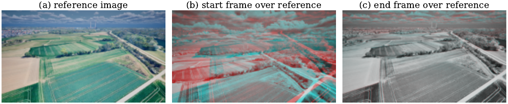
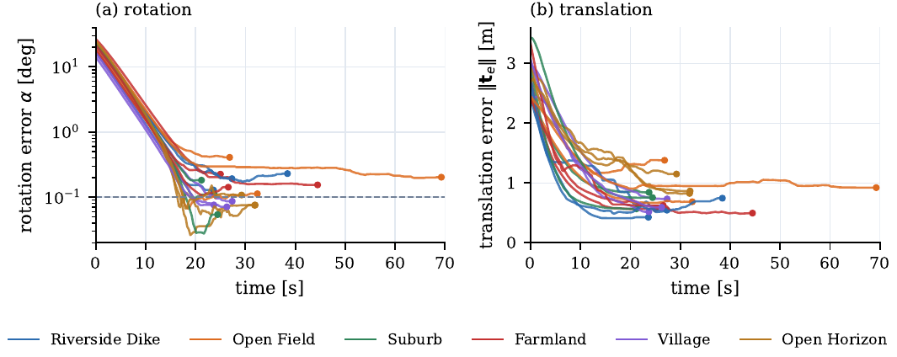
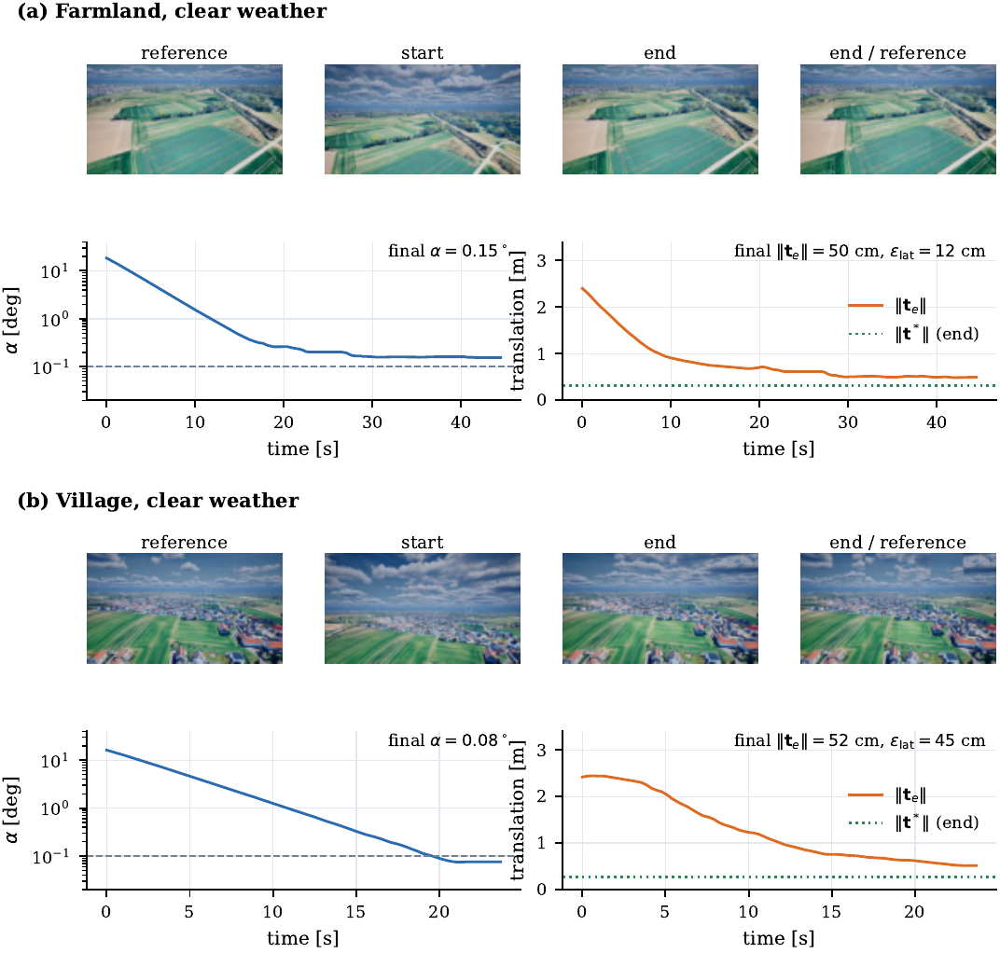
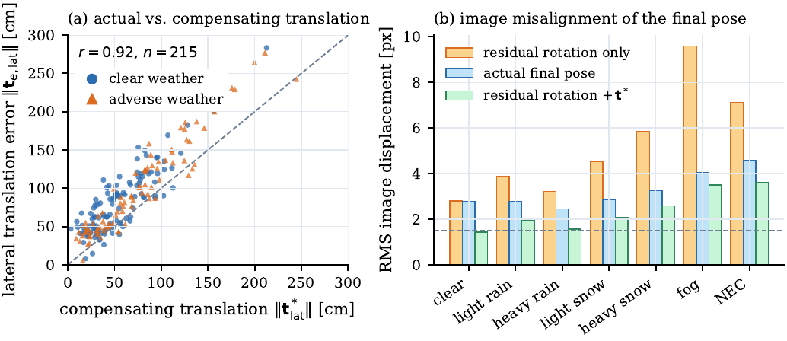
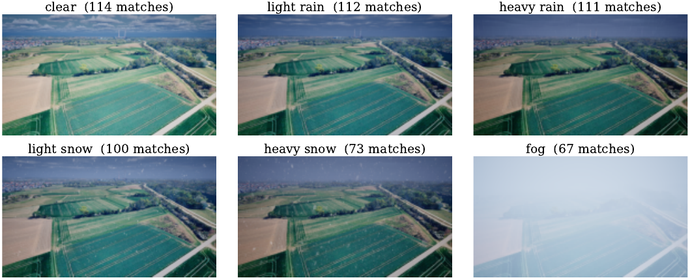
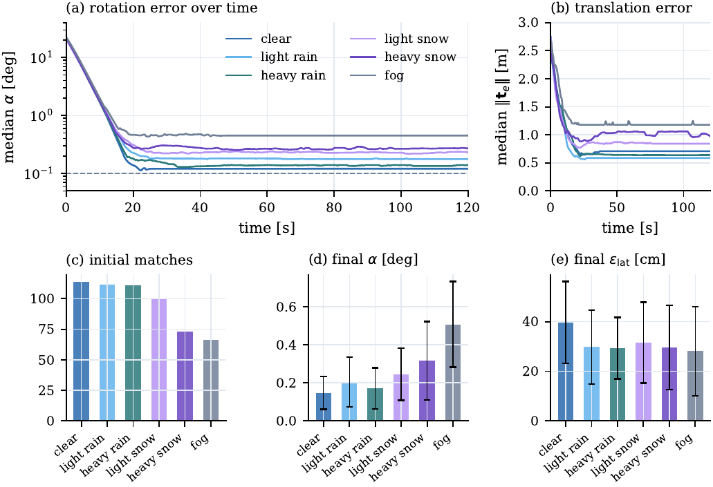
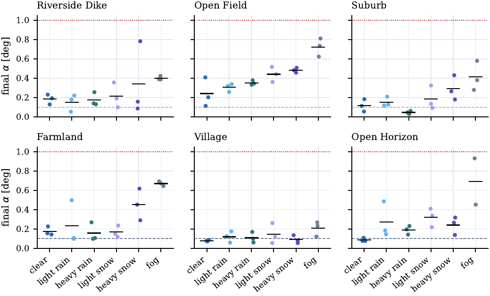
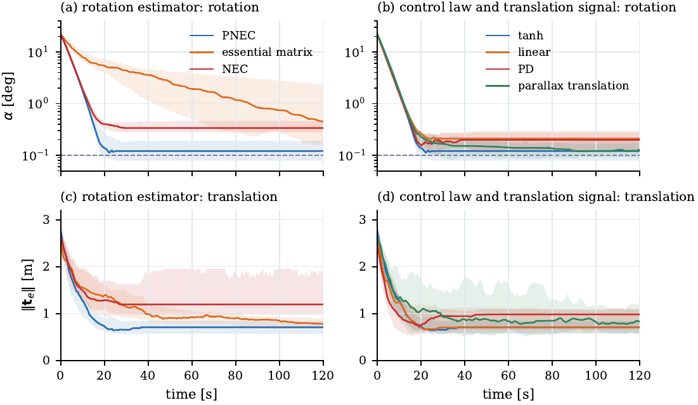
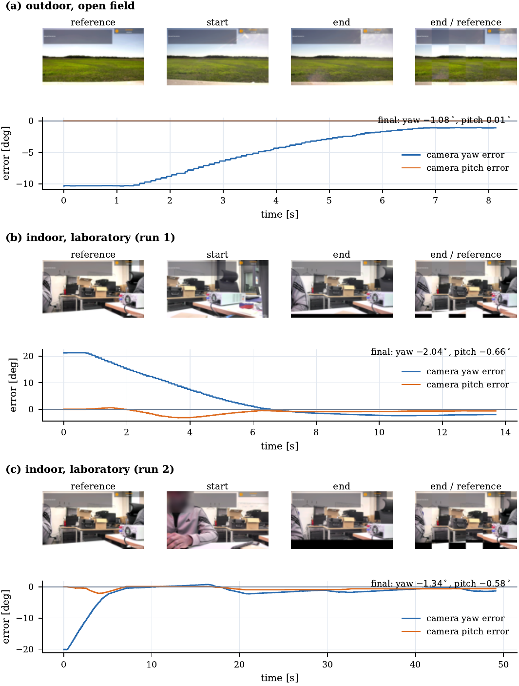

Master's thesis · TH Ingolstadt · Project ENGEL · AImotion Bavaria · 2025–2026
Returning a drone's camera to the exact viewpoint of a stored reference image, using only a single monocular camera: no map, no depth sensor, no prior knowledge of the scene. GNSS gets the vehicle within a few metres and tens of degrees; the closed visual loop removes the rest.

Approach
Two-view pose estimators recover translation only as a unit direction, and that direction becomes ill-conditioned exactly where a repositioning loop operates: near the goal, with a baseline that is tiny compared with scenes 150–250 m away. The system therefore separates the two problems.
Results · Simulation (Unreal Engine 5)
Six reference views of a real rural area near Ingolstadt (Google Photorealistic 3D Tiles), 13 configurations, 18 trials each, starting 1.9–3.4 m and 14–28° from the reference. Every number below is the error at the end of the run, over all trials, against simulator ground truth.


Key finding
Rotational image motion does not depend on depth; translational image motion shrinks with it. A residual rotation α is therefore, in the image, almost indistinguishable from a sideways offset of α·Z: at 200 m, 0.1° moves the image by 1.7 px, exactly like 35 cm of translation. An image-only loop aligns the view and comes to rest on this ambiguity.
With rendered ground-truth depth, the final translation error splits into a part that compensates the residual rotation (invisible in the image) and an effective, visible error. In clear weather, the 74 cm metric error contains 39 cm of compensation; the remaining 40 cm ≈ 2 px. Across 215 trials the actual and compensating translations correlate with r = 0.92. A Fisher-information analysis shows that the images would determine the pose to a few centimetres — the residual is set by the stopping rules and the rotation bias, not by missing information.

Weather experiments · Simulation
Weather is rendered with Ultra Dynamic Sky / Weather; in every run the sky and clouds also change between reference and live view. Bad weather removes matches and degrades the rotation estimate, yet the view is still recovered: the effective lateral error stays at 28–32 cm in every condition, and every trial ends below 1° of rotation error.

| Condition | Matches | Rotation error | Worst trial | Effective lateral error | Trials < 0.2° |
|---|---|---|---|---|---|
| clear | 114 | 0.15 ± 0.09° | 0.41° | 40 cm | 78 % |
| light rain | 112 | 0.21 ± 0.13° | 0.50° | 30 cm | 61 % |
| heavy rain | 111 | 0.17 ± 0.11° | 0.38° | 29 cm | 67 % |
| light snow | 100 | 0.25 ± 0.14° | 0.52° | 32 cm | 44 % |
| heavy snow | 73 | 0.32 ± 0.21° | 0.78° | 30 cm | 39 % |
| fog | 67 | 0.51 ± 0.23° | 0.93° | 28 cm | 6 % |


Ablations · Simulation
Rotation estimator: PNEC's uncertainty weighting reduces the final rotation error 2.4× relative to the unweighted NEC; the essential matrix becomes ill-conditioned as the baseline vanishes and ends 7× worse (1.05° vs 0.15°). Translation signal: the signed displacement fit halves the forward-error scatter compared with a parallax magnitude. Control: the saturating law leaves a 30 % smaller rotation error than linear or PD control. Stopping threshold: 0.5 px instead of 1.5 px cuts the effective error by 35 % at the cost of longer runs.

First hardware test · not a full-system validation
On the ENGEL quadrotor, with the vehicle stationary and only the gimbal commanded, the rotation loop ran on real camera images in three tests (one outdoors, two in the laboratory). It reduced the camera yaw error from 10–21° to 1–2° within 8–49 s. A residual error of 1–2° remains, larger than in simulation. Translation was not controlled in these tests.

Limitations